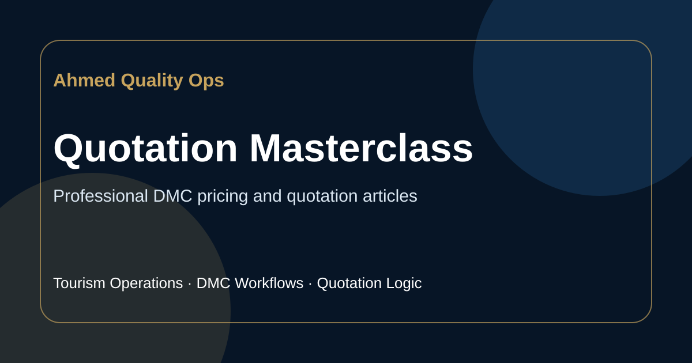
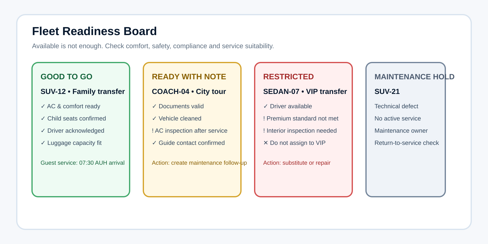
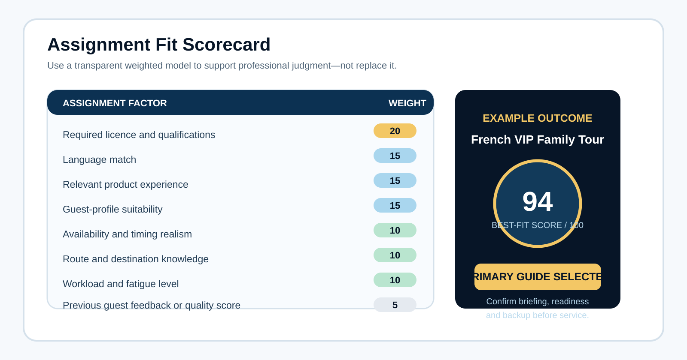

Flagship active project
InfraDispatch
Smart rule-based dispatch planner/demo for pickup sequencing, team briefing outputs, and operational decision support.
A more refined, memorable portfolio style: lighter than the executive navy concept, richer than the color concept, and designed to position Ahmed as a practical operator who can translate messy tourism workflows into clear systems.
This layout gives each project more visual confidence. InfraDispatch spans the largest area, while supporting work demonstrates range across assignment logic, quotation, fleet readiness, and experience design.
Smart rule-based dispatch planner/demo for pickup sequencing, team briefing outputs, and operational decision support.

Guide, driver, timing, capability, and guest-context thinking.

Cost, margin, VAT, transport, tickets, gratuities, and break-even workflow.

Condition-aware planning for stargazing tour readiness.

Exception, risk, and manager-attention dashboard thinking.
The case study structure makes the work feel serious: visual evidence, workflow sequence, measurable claims only when available, and clear static/demo boundaries.

Use this style to explain what the product demo does, who it helps, what problem it addresses, and what still needs backend/API work before it can be described as a production platform.
The enhanced style makes articles feel like practical operator notes: clear categories, useful previews, visual diagrams, and topics that reinforce Ahmed's domain expertise.
What managers should see on one screen when readiness and exceptions matter.
Published · Operations systems
How to match people, timing, guest profile, and operational risk.
Published · Service quality
A practical DMC sales scenario from signal to confirmed movement.
Published · DMC salesNet cost, selling price, markup, VAT, transport, and break-even risk.
Published · Commercial clarityThis palette improves the previous version by lowering visual noise, sharpening contrast, and using color roles more intentionally.